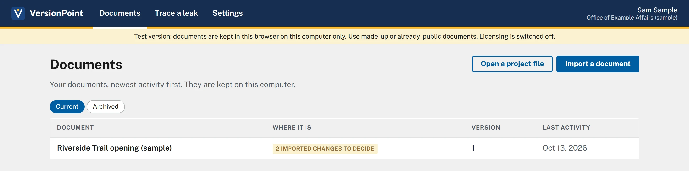

Lesson 05 minutesThe sample
Before you start
What the test version is, what it keeps, and who does what in VersionPoint.
Why it matters
The test version is a real copy of VersionPoint, but it keeps everything in your browser and has no sign-in. Knowing that up front keeps real documents out of it, and keeps your practice from disappearing.
Watch
![The VersionPoint test version's first screen. Callout 1 marks the lead line: Revision control for communications documents: send a draft for review, take back every edit as a revision to approve, and keep every margin note out of the copies that go out. Callout 2 marks the banner: This is the test version. Everything stays in this browser on this computer; nothing is sent anywhere. Use made-up or already-public documents while testing. Callout 3 marks the Try it with a sample card with its Open the sample button. Callout 4 marks the Start with your own documents card, with Office name, Your name, Your email and Set up.](assets/l0-start-a.webp)
- What VersionPoint does, in one line: send a draft for review, take back every edit as a revision to approve, and keep every margin note out of the copies that go out.
- This is the test version. Everything stays in this browser on this computer, and nothing is sent anywhere.
- Try it with a sample: a made-up press release that already has tracked changes and margin notes. The course uses it.
- Start with your own documents sets VersionPoint up with your own name and office. You won't need it for the course.
![The Documents page of the sample. Callouts 1, 2 and 3 sit just under the yellow strip, in line with the three links in the bar at the top: Documents, Trace a leak and Settings. Callout 4 marks the name at the right of the bar, Sam Sample, with Office of Example Affairs (sample) under it. Callout 5 marks the end of the strip under the bar: Test version: documents are kept in this browser on this computer only. Use made-up or already-public documents. Licensing is switched off. Callout 6 marks the one document, Riverside Trail opening (sample), and callout 7 its tag, 2 imported changes to decide. The table's other columns show version 1 and the last activity date.](assets/l0-documents-a.webp)
- Documents: every document you're working on, newest activity first. It's where every lesson starts.
- Trace a leak: paste text from a copy that got out, and VersionPoint tells you which copy it was (lesson 9).
- Settings: the license, a log of everything done in VersionPoint, and Start over.
- Who you are: your name, with your office's name under it. In the course you're Sam Sample, of the Office of Example Affairs (sample).
- The test-version strip, on every page.
- The app's own sample release. It arrived with a reviewer's tracked changes and notes already in it.
- Its tag says where it is: 2 imported changes to decide. You'll decide them in lesson 5.
Who does what
VersionPoint is for one comms person on one computer: you. Two kinds of people take part in a document's review.
| Who | What they do |
|---|---|
| You | Everything: import the draft, send each review copy, bring it back, approve or reject every edit, and make the copies that go out. Your name goes on the copies you send and the decisions you make. |
| Your reviewers | Read the Word file you send them, edit it with Track Changes, and send it back. They never sign in to VersionPoint and never see it. |
In the sample you are Sam Sample, the one person in the Office of Example Affairs (sample). The one person is always the office's Admin, which is why Settings is in the bar.
Try it
- Open the VersionPoint test version in a second window, beside this page.
- Read the banner under the lead line. Then, under Try it with a sample, choose Open the sample.
- On Documents, find Riverside Trail opening (sample) and its tag, 2 imported changes to decide. Don't open it yet.
- Look at the right end of the bar at the top: Sam Sample, with Office of Example Affairs (sample) under it.
- Choose Settings. Find License, Activity and Start over. Don't choose anything under Start over.
- Choose Documents in the bar at the top to go back.
Check your work

Watch out for
Quick check
Pick an answer to see why it is or isn't right. Nothing is scored or sent anywhere.
Question 1
A colleague asks if they can try the test version on the draft of tomorrow's real release. What do you tell them?
Question 2
Your subject matter expert asks for a VersionPoint login so they can review. What do they need?
Lesson 1 brings the practice release, The Lake Shuttle, into the sample.